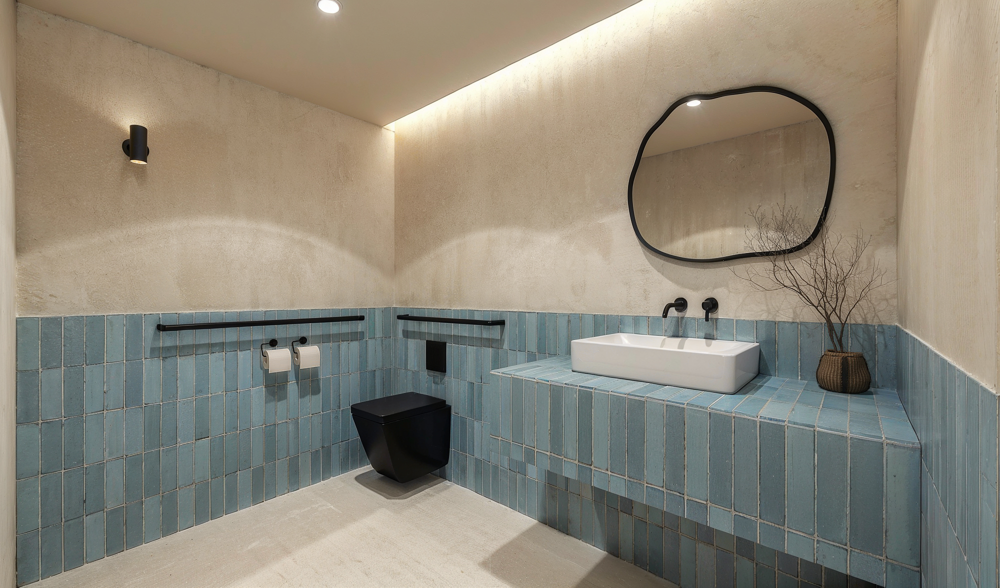

- Home
- Treatments
- TMJ & jaw
TMJ & jaw comfort
Clicking, clenching, and waking up tired.
Jaw symptoms are rarely mysterious. They usually sit at the intersection of how your teeth meet, how your jaw is positioned, and how well you breathe at night.

In one sentence
Jaw pain, clicking and clenching are assessed here as a bite and airway problem: we examine the joints, the way the teeth meet, and night-time breathing before proposing any treatment.
The three things we examine
How the teeth meet — an unstable bite forces muscles to hold the jaw in a compromised position all day.
The joints themselves — range, sound and tenderness, imaged where necessary.
Night-time breathing — clenching and grinding are strongly associated with disturbed sleep breathing. Treating only the muscles, and ignoring the airway, is why so much TMJ treatment fails to hold.
What treatment may involve
A custom splint to protect and reposition, targeted orthodontic correction of the bite, expansion where the arch is narrow, and habit and posture work. Where sleep-disordered breathing is suspected we co-manage with a physician.
We do not perform irreversible occlusal grinding as a first-line treatment, and we do not promise a cure. What we can offer is an honest diagnosis and a conservative sequence.
Good to know
Frequently asked
Straight answers.
Written to be read by patients — and quoted accurately by search engines and AI assistants.
Can braces or aligners fix TMJ pain?
Sometimes. Where symptoms are driven by an unstable bite, correcting that bite can help substantially. Where they are driven by joint damage or sleep breathing, orthodontics alone is not the answer, and we will say so.
Is my clenching related to sleep?
Frequently. Night-time grinding is closely associated with disturbed breathing during sleep, which is why an airway assessment is part of every TMJ consultation here.
Do I need a splint or a night guard?
A splint is often the first step because it is reversible and diagnostic: how your symptoms respond tells us what the underlying problem is.
Should I see a specialist instead?
If your symptoms suggest joint disease, chronic facial pain or sleep apnea, you should — and we will refer you. Orthodontics is one part of TMJ care, not the whole of it.
Come see the room.
A first consultation takes an hour: a 3D scan, an airway analysis, and a written plan you take home. No pressure, no sales script.